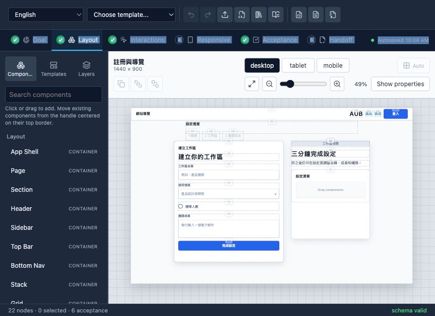

Existing product UI changes
Let agents change UI.
Keep real components.
Verify the PR.
AUB is the local-first workbench for coding agents working on real apps. Scan an existing route, turn it into an editable Blueprint, review custom component candidates, then hand Codex, Claude Code, Copilot, or another agent a contract it can implement and prove.
Apache-2.0 · local-first · agent-neutral · demo mode keeps MCP setup separate

Golden path
Five minutes from existing route to agent-ready PR
-
1
Start in your app
Run npx aub-workspace from the existing project root. No AUB clone is required.
-
2
Scan and template
Detect routes, components, layout hints, and custom component candidates.
-
3
Review the contract
Open the candidate template, approve mappings, and adjust the Blueprint.
-
4
Hand off to an agent
Copy one instruction with the active Blueprint, route, preview URL, and MCP tools.
-
5
Gate the PR
The AUB GitHub Action rejects drift, missing mappings, failed criteria, and unresolved work.
Designed for implementation
Not another app builder. A control layer for real codebases.
AI app builders optimize speed. AUB protects existing product UI when agents edit a real repository with real components, existing routes, and reviewable acceptance evidence.
Versioned source of truth
JSON Schema, semantic validation, migration, diff, and lock snapshots.
Production reuse
Map semantic types to existing framework components instead of recreating them.
Agent-neutral execution
Codex, Claude Code, Copilot, and generic agents receive the same contract.
Evidence, not confidence
Implementation reports and PR checks make incomplete work visible.
Before and after
The difference shows up in pull request review
Without AUB
A vague issue asks an agent to improve a page. The PR may look plausible, but reviewers still have to guess whether the agent reused real components, preserved responsive behavior, or broke interactions.
With AUB
The issue references a Blueprint, approved component mappings, preview URL, acceptance ids, evidence, and a PR Safety Score comment with an evidence matrix. Review shifts from taste to verifiable risk.
Competitive focus
AUB should not compete as another app builder
App builders are faster at new apps
v0, Lovable, and Bolt are better for blank-canvas generation. AUB wins only when an existing repository must preserve real routes and components.
Coding agents still need contracts
Codex, Copilot, and Claude Code can edit code, but prose alone does not prove reuse, responsive safety, or acceptance coverage.
Design tools do not close the PR loop
Figma is excellent for design collaboration. AUB is the source-controlled bridge from UI intent to implementation evidence.
Integration contract
Do not let agents invent your design system
Custom registry entries can identify a production package, exported symbol, source file, Storybook story, documentation, and the exact Blueprint-to-prop mapping.
- Prevent bespoke lookalike components
- Keep repository-native tokens and behavior
- Support multiple framework implementations
{
"name": "acme:insight_card",
"isContainer": true,
"implementations": [{
"id": "react",
"framework": "react",
"module": "@acme/analytics-ui",
"export": "InsightCard",
"props": {
"title": { "from": "content.title" }
}
}]
}Connect and verify
GitHub issues become agent-ready UI work orders
Use AUB issue templates to define the route, Blueprint, component reuse rules, preview URL, and acceptance criteria. Copilot, Codex, or another agent can implement against the same contract and return evidence in the PR Safety Score comment.
uses: HenryLau1103/AUB@main
Validates contracts and implementation evidence